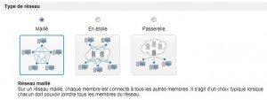
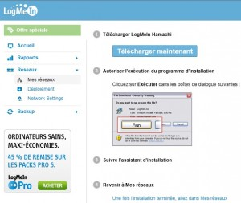
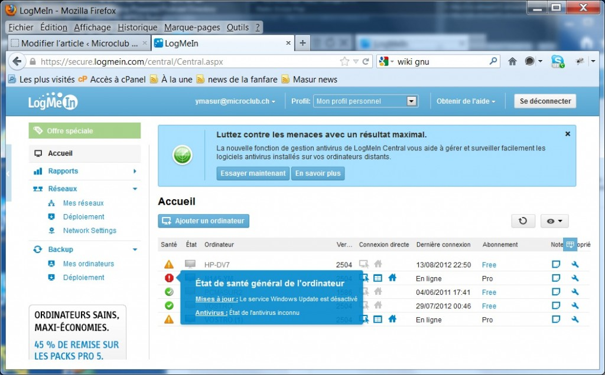

Consoles à distance
Intro
Le but est de se connecter sur un 2ème PC, via le réseau. C’est vrai que le terme console fait un peut penser à ces terminaux sériels des ordinateurs des années 1980; mais c’est aussi utilisé pour un écran graphique, ou un bureau électronique d’un OS moderne. On a aussi comme termes: bureau à distance, « remote desktop », « terminal server », « virtual network computing »…
La prise à distance est nécessaire dans le cas d’un service technique pour consulter une machine, pour assister un utilisateur, modifier une config sans avoir à se déplacer, voire se connecter sur une machine virtuelle. Question terminologie, dans cet article j’appelle le PC sur lequel on travaille le PC source; et la machine distante à laquelle on se connecte, le PC cible. Pour les essais, j’ai utilisé un portable Dell Vostro 1700, écran 17″, un Samsung N145, écran 10″; parfois celui de ma femme, un HP 17″. Tous connectés par le WiFi; bande passante 40-54 Mb en fonction de la réception.
Les besoins varient suivant l’utilisation que l’on désire: faut-il que la console s’adapte à la résolution distante? L’utilisateur local doit-il pouvoir voir les manipulations, ou celles-ci doivent être masquées? Plusieurs sessions distantes peut-elles être partagées? Faut-il passer des fichiers? La machine distante peut-elle être redémarrée? Est-ce que les protections – souvent imposées – ne génèrent pas de difficultés? Peut-on atteindre la cible par un browser? Faut-il passer par Internet? Ou surtout pas?
Bref, mieux vaut faire des essais concrets avant de se décider pour utiliser un produit plutôt qu’un autre. Sur le site de Teamviewer, un document quantifie tout ça. Voici quelques indications qui peuvent vous aider.
Remote Desktop (RDP – intégré à Windows)
Cette application est dans: Start -> Tous les programmes -> Accessoires: c’est le programme mstsc.exe. C’est gratuit (bon, une fois qu’on a payé Windows), livré avec Windows 7 (détails ici), mais ne fonctionne qu’avec les versions les plus chères. L’avantage est qu’on se croit facilement sur la machine cible! Par contre j’ai été confronté à plusieurs situations ou ça ne fonctionnait pas, ou que dans un sens. Il faut vérifier si l’activation est possible par les paramètres de l’ordi:

La procédure complète est ici. Normalement, cela fonctionne même avec XP SP3 et les versions « server ». Lorsque la connexion est établie, une nouvelle session est ouverte – ce qui ferme celle qui serait en cours sur le PC cible. Seul, un onglet apparait au haut de l’écran pour fermer la session. Mais je ne suis pas arrivé à faire fonctionner RDP entre mes 3 PCs à la maison, les PCs comportant une W7 Ultimate et deux Home…

Si je trouve comment faire, je vous préviendrai…
Voici donc comment ça fonctionne. Au moment ou vous lancez une connexion (login/password acceptés), mais que la cible est occupée par une session ouverte, il vient:

Si l’utilisateur est d’accord, sa session est fermée et la nouvelle ouverte. Une présence est donc nécessaire dans un tel cas; ou le PC cible doit toujours être laissé en session fermée, ce qui est rarement le cas de consoles d’exploitation, on en conviendra. Donc, la console ouverte, la qualité graphique est excellente et rapide (bon, sur un LAN à 100 Mb/s…). Et lorsque l’utilisateur veut reprendre la main, une alerte vient:

Si l’écran cible a une résolution supérieure à la fenêtre du PC source, des ascenseurs permettent de déplacer le bureau dans la fenêtre de la console. Attention alors avec la barre des tâches – ceci est valable pour toute console à distance – à ne pas confondre celle du PC source ou du PC cible! Au niveau technique, MSTSC.exe prend 2,4 Mo; avec la session ouverte entre 9 et 17 Mo en plus selon le contenu du bureau. A signaler que RDP ne se laisse pas feinter si la cible a deux écrans: l’écran du PC source défini le bureau. Il utilise le port 3389 – mais c’est configurable.
Au bureau (du travail, pas de Windows!), il n’a pas été possible de l’installer partout, malgré l’unité des versions W7 Pro et XP-SP3. A signaler aussi un piège avec Windows 2003 Server: Une nouvelle instance du bureau de l’utilisateur est ouverte; les applications lancées dans la première instance ne sont pas visible, et ça sème la confusion. Bref, d’où l’idée d’utiliser une autre application, plus souple. Plus 1:1, quoi.
Teamviewer
Ce programme est facile à installer (V 7.0.1), dispo en français, il peut aussi être utilisé directement, sans installation, par exemple sur clef USB. Disponible aussi pour Mac, Linux, IPhone (?) et Android (je me pose la question d’une telle utilité sur écrans de smartphone). Gratuit pour usage privé, disponible ici: teamviewer. On peut choisir d’installer un service – « installation accès non surveillé », de manière à prendre le contrôle avec un login/password sans intervention humaine sur la machine cible.

Le rendu visuel est très bon et ménage la bande passante (réglable; ou automatique). Avec W7, l’écran du PC cible change de mode et le fond disparaît pour une couleur unie. Il est possible, avec un écran du PC source plus faible résolution que la cible, soit d’avoir tout le bureau réduit, soit des ascenseurs. On peut créer une liste de PCs, qui apparaissent dans une fenêtre, ce qui facilite la connexion.

Un « chat » est intégré et permet par un onglet pratique de côté, de développer/cacher la fenêtre.

Très intégré, il propose un bouton supplémentaire dans la barre des fenêtres (quasi toutes!) pour lancer une présentation de l’application. On voit dans la capture que, par exemple, la console CMD.EXE est concernée; par contre pas Winamp que l’on voit en arrière plan, ni le Pense-bête, qui ont tous deux une fenêtre spéciale. Avec ce nouveau bouton, on peut partager l’écran d’une application et autoriser (ou non) les autres utilisateurs à interagir. Heureusement, c’est désactivable.
Il n’est pas indispensable d’être connecté sur le net pour prendre le contrôle d’un PC dans son LAN.
Utilisation mémoire : Vostro 15 Mo (pilote), 45-70 Mo (console); Samsung : 25-33 Mo, dépend du contenu visuel. Pour quitter définitivement l’application et libérer la mémoire, il faut le faire via l’icône installée dans la barre des tâches.
LogMeIn
Pour PC, MAC, et mobile, via Internet, l’accès se fait par la page d’accueil en français. Le produit est en fait LogMeIn Hamachi, détails ici.. Il est basé sur un réseau VPN, Hamachi justement, qui est mis en place dès sont téléchargement (v. 4.1.254).On peut régler les accès et la topologie que l’on veut appliquer à son réseau: maillé, étoile ou même passerelle. Il est en effet possible d’établir plusieurs réseaux au nom distinct:
, 




Le browser reçoit un module complémentaire pour permettre la connexion de console à distance: active-x pour IE, du Javascript pour Firefox ou Chrome. Et aussi JAVA. Le résultat est similaire pour chacun des browser. Au moment de la connexion, le pare-feux de Windows se manifeste et demande l’autorisation pour laisser passer le programme.
Pour initier une connexion, il faut s’identifier sur le site de LogMeIn, qui demande identifiant (adresse email) et password. A partir de là, les ordinateurs enregistrés dans le VPN sont listés, avec des informations… assez fouillées:



Comme chez ses concurrents, LogMeIn permet de régler le compromis bande passante/qualité de l’image. Dans les options de résolution, il est aussi possible de modifier (diminuer) celle de la cible. Plus surprenant, par défaut il capture aussi le son: effet garantit, surtout si on n’arrive pas à supprimer cette « feature ».
A droite de l’écran, une liste de menus – pas tous à dispo sur la version Free – permet une foultitude d’actions. Le produit est vraiment prévu pour du support, du paramétrage et de l’entretien de PC distants. L’échange de fichiers est particulièrement élaboré: une fenêtre double permet les opérations aussi bien que dans Total Commander !

La place prise en mémoire est difficile à distinguer de celle du browser. J’ai vu des 70 à 90 Mo avec Firefox, 70 Mo avec IE.
En deux mots: une solution semi-pro, très complète, sécurisée. On peut reprocher l’utilisation de browser et de l’ergonomie des menus qui mangent une place importante sur l’écran visualisé.
VNC
Au début 100% gratuit jusqu’à la version 4.1.3, VNC (Real VNC); son code C++ était à dispo comme dans les meilleurs projets GNU. On peut toujours l’obtenir ici: http://www.realvnc.com/download/open/. VNC est maintenant décliné en plusieurs versions. Désormais, une licence est demandée même pour la version gratuite. Celle-ci ne permet pas de transfert de fichier, ni de « chat ». VNC n’est qu’en anglais.

Il permet des liaisons cross-plateformes: Windows, MAC, UNIX, Linux…L’installation est sans souci. Il y a 2 programmes: le serveur: en mode manuel ou en mode service, et le viewer.Pour ouvrir une session VNC, le serveur demande un password, mais pas de session: ce sera celle qui est active, à défaut vous tombez sur l’écran d’accueil classique de Windows.
VNC ménage bien la bande passante Son mode de fonctionnement est de lire le bimat de l’écran visualisé pour le transmettre de manière comprimée, environ 10 x par secondes. Mais montrera dans ce cas malgré tout quelques lenteurs, notamment avec les bulles d’aide des programmes ainsi monitorés. En standard, les couleurs sont limitées à 256 pour diminuer la bande passante, et un dégradé apparaît plein d’auréoles. On peut changer ça par le menu – qui apparait par F8 – ou au haut de la fenêtre de connexion.

VNC server utilise 2,8 Mo (pilote) + 4,4 Mo (session); tandis que le Viewer prend 7,1 Mo. Le port 5800 est utilisé (modifiable au besoin). Si Java est installé, une option intéressante est d’atteindre une machine cible par le browser de la machine de connexion sans y avoir installé quoi que ce soit! L’URL devient: http://(nom_machine):5900 et Il lance un viewer Java ouvert sur ce port! De plus, le n° de port est aussi configurable.
Plus d’infos sur VNC ici: wiki VNC. En deux mots: souple et facile à mettre en oeuvre; peu intrusif; il n’est même pas nécessaire sur le PC source… c’est un outil que nous utilisons régulièrement sur les machines d’exploitation.
VPN SSL de F5 Networks
Cette société propose des « remote desktop » via canal VPN sécurisé. Soit un ou des accès console, sur le PC d’une entreprise via le WEB. Ceci dépasse quelque peu le cadre de cet article, mais comme j’en profite de par mon travail, permettez que vous en fasse une courte description vu de l’utilisateur. Que je suis. La connexion se fait via le WEB, depuis n’importe quel PC connecté. On s’adresse au serveur par HTTPS, et un exécutable est chargé sur le PC source. Ceci demande que le browser accepte un tel chargement. Pour la petite histoire, ce produit remplaça en 2009 – je crois – un autre: GotoMyPC. Il est aussi payant; essais 30 jours possible.
Initialement, l’application commençait par vérifier l’installation et la fraicheur de l’antivirus. Cependant, suite à des problèmes de mise à jour, ce contrôle de version a finalement été abandonné. Il y avait toujours un décalage entre la plus haute version testée de l’antivirus et une version mise à jour et appliquée sur le PC source. Ceci conduisait à un échec de connexion: pas terrible, lorsqu’on est de service de piquet et que l’on doit consulter l’état d’une machine via la connexion distante!
Si tout se passe bien, un écran de choix apparait:

On y voit quelques possibilités d’accès sur l’intranet /par définition interne, pas visible sur le WEB); aussi celle de réveiller un poste (je n’y suis pas arrivé… Il semblerait que cela a été abandonné), celle de se connecter par MAC/Linux (je n’en ai pas). A droite figurent les postes auxquels l’administrateur vous donne le droit d’accéder. Par « terminal server » lisez: console à distance.
Une fois le poste choisi (il doit être en fonction) une fenêtre de console permet une ouverture de session. Il est possible de choisir la résolution de la cible, via un menu de config:

A partir de là, la ressemblance avec le RDP de Windows est frappante. Sur le poste cible, une session locale ouverte et en fonction sera verrouillée: les collègues qui arrivent au boulot le lendemain devront se logguer pour monitorer les applications en local. A la Ville, nous proposons un tel accès aux fournisseurs sous contrat qui sont appelés à faire du dépannage ou de la maintenance de nos systèmes. Pour éviter les conflits de session, nous leur mettons à disposition un PC posé au sous-sol dans la salle des serveurs ou un PC virtualisé. A partir de là, il est bien entendu possible de scruter une autre machine du réseau (avec les droits ad-hoc, bien sûr) avec … VNC, par exemple.
Conclusion
Il faut clairement choisir sa console à distance en fonction de ses besoins. Les produits discutés ici, sont gratuits et souvent suffisant pour une utilisation privée de quelques PCs dans un sous réseau, voire même via le WEB pour assister une connaissance. La sécurité est, dans ce cas, une nécessité absolue. Rien qu’à l’idée qu’un pirate puisse surveiller ma session et/ou la prendre en main lors d’une absence me ferait cauchemarder. Mais elle est bien présente dans tous les produits qui l’offrent.
En résumé, si vous voulez prendre la main sur un PC d’un sous réseau, RDP de Windows peut suffire. Pour un bitmap fiable, sans toucher à la session, qui prend peu de ressources, ou sur un environnement hétérogène comportant MAC et Linux, votez VNC. Pour une aide interactive avec validation de l’utilisateur, via le WEB, TeamViewer fait l’affaire. Mettre à jour et vérifier des PCs, organiser une séance de démo: c’est LogMeIn qui semble mieux faire l’affaire.
Un peu plus haut, j’ai un peu moqué les i-phone avec leur écran trop petit pour permettre une prise à distance vraisemblable; mais la limite entre le PC équipé et le gadget mobile devient de plus en plus floue. Il s’agit de surveiller ce qui se fait en la matière. Avec une tablette c’est possible. Donc…
Yves Masur (8/2012)
Références
- Historique de VNC: http://fr.wikipedia.org/wiki/Virtual_Network_Computing
- Comparaison TeamViewer et VNC: http://remote-desktop.findthebest.com/compare/1-5/TeamViewer-vs-VNC-Free-Edition
- Comparaison LogmeIn et VNC: http://remote-desktop.venturebeat.com/compare/2-5/LogMeIn-Free-vs-VNC-Free-Edition
- Comparaison encore: http://www.40tech.com/2010/03/16/remote-access-shootout-logmein-vs-teamviewer/ (j’arrive à la conclusion inverse de cet auteur 😉
- Le comparatif des fonctionnalités (Teamviewer) http://www.teamviewer.com/fr/res/excel/TeamViewer_Benchmark_fr.xls
Super ton article !
Pour dépanner les copains, j’utilise TeamViewer en leur demandant d’installer que le module de client spontané : TeamViewer QuickSupport.
Concernant ta remarque sur les gadgets mobile : il existe désormais une version de TeamViewer pour IOS et Android permettant de prendre le contrôle à distance à partir de ton PC de ces appareils.
Dans ce sens (PC->Xphone), je comprend.
A quoi sert teamviewer sur iphone?
Et bien, je l’utilise très souvent, par exemple pour surveiller de très long calculs qui tournent a la maison et lancer le suivant dès que ok.
Evidement ce n’est pas fait pour tapper de code a distance:-)
Bravo pour ton article !
Pour ma part j’utilise aussi AMMYY qui était entièrement libre et maintenant « home only ». C’est un concurrent de teamviewer. Sa qualité d’affichage est toutefois meilleure que ce dernier et supporte très bien le multi-écrans ! il est plus facile à installer, car il suffit de lancer l’exe ! ce qui est simple pour des utilisateurs non initiés !
Merci pour cette source, intéressant! Teamviewer a aussi une exécution possible sans installation, comme je l’indique dans l’article.
Excellent article Yves, comme toujours !… Merci.
Ta dernière remarque m’interpelle également. Une fois ce soft installé sur ton PC, une tierce personne pourrait-elle en profiter pour venir visiter ton PC à ton insu ?
Après-tout, on pourrait se demander si la gratuité d’un soft ne cache pas une porte dérobée à quelque part. On dit souvent que si une entreprise t’offre gratuitement quelque chose, c’est qu’elle y a un intérêt caché. Ce peut être de la simple pub afin de te refiler ensuite une super version payante, comme pour les anti-virus entre autres.
Ma question est donc simple: comment être sûr que ta console de prise en main à distance n’est pas également un cheval de troie sur ta bécane ?
amitiés
michel vonlanthen
Probablement, il vaut mieux désactiver cette porte d’entrée si tu n’en n’as pas/plus besoin. Évidemment, si tu laisses trainer ton password, une session est potentiellement ouvrable. Quand à la duplicité d’une entreprise… Elle la mettrai vite à mal. Les produits gratis sont souvent pour usage perso; les version payantes offrent des +. Il n’y a rien de caché dans une telle stratégie. Le cryptage (plus/moins fort selon le produit) est à mon avis suffisant pour empêcher une action malveillante.
Bonjour à tous,
Dans la série prise de main à distance pour dépanner ses « potes », et surtout, pour visualiser ce que l’on essaye de nous expliquer…
Avast 7
http://alturl.com/7onnq
Chrome
http://alturl.com/4gzny
Windows Live Messenger
http://alturl.com/eyjh2
Etc.
Reste plus qu’à trouver le logiciel commun, qui n’est pas à l’encontre de ses convictions et qui ne fait pas planter le système…
GEORGES Gérald
Merci pour ce bel article fort interressant!!
Pour ma part, pour avoir utilisé la plupart de ces outils, il me semble que Teamviewer me convient bien.
Mais attention il est loin d’être gratuit en réalité. Si la licence payée est à vie, donc pas de versement annuel pour la renouveler, youppie !! la licence ne concerne que la version achetée, alors on paye à chaque changement de version et l’on s’acquitte d’un émolument d’environ 80% du prix plein !! OUPS….Et en plus ils arrivent à nous sortir une nouvelle version chaque année……
Mais le produit et le support sont satisfaisants….alors au diable l’avarice
C’est aussi bon.
Le logiciel fonctionne bien, Ammyy Admin http://www.ammyy.com ne nécessite pas l’installation ou configuration spécifique, travaille derrière les passerelles NAT ainsi que dans un réseau local.